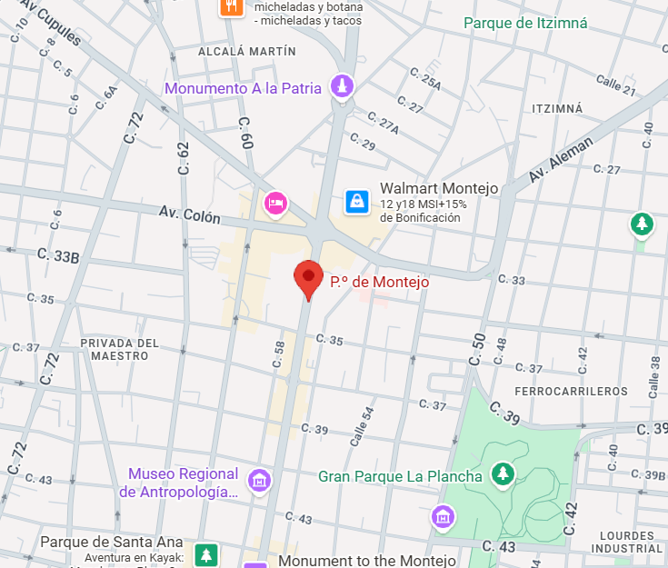

El Paseo de Montejo es la avenida más emblemática de Mérida, Yucatán. Construida a finales del siglo XIX, fue inspirada en los grandes bulevares europeos y refleja la prosperidad del auge henequenero. A lo largo de la avenida destacan casonas porfirianas, mansiones de estilo francés y monumentos históricos como el Monumento a la Patria. El Paseo de Montejo muestra la elegancia arquitectónica de la Mérida antigua y su transformación a lo largo del tiempo. Hoy es un punto esencial para caminar, admirar su historia y disfrutar de la vida cultural de la ciudad.
Ubicación |
Información Esencial
|